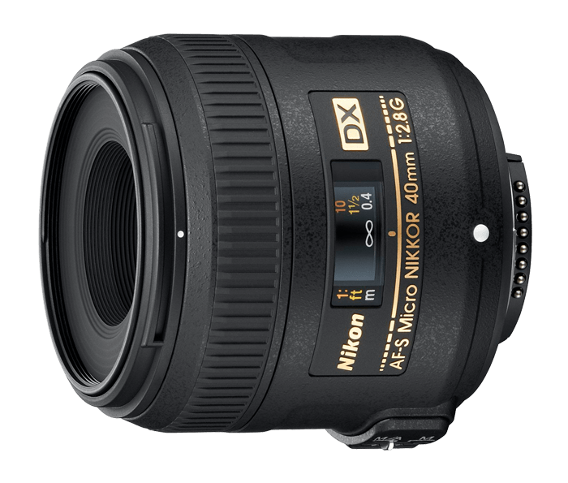
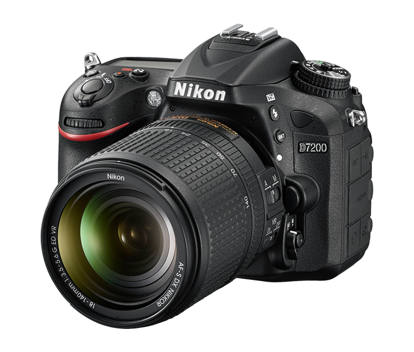
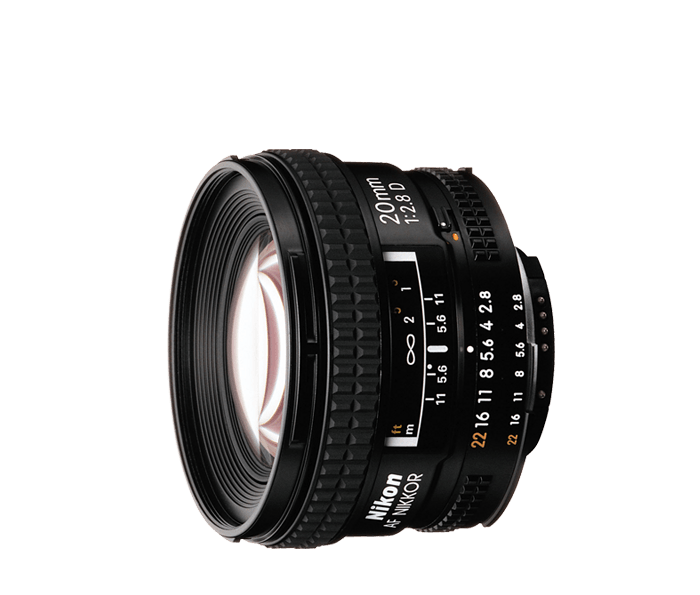
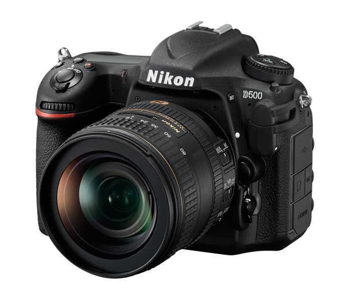
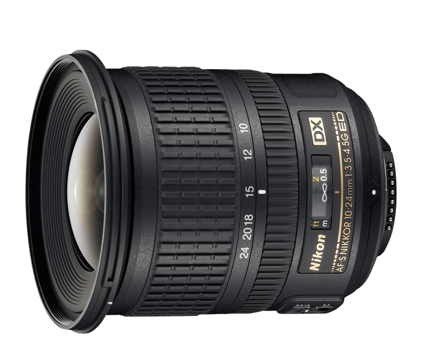

Here, we offer you our suggestions on the best photography equipment to purchase.
Beginner |
|
|---|---|

Nikon D5300 |

Nikon DX: AF-S Micro-Nikkor 40mm f2.8G |
|
Best general-purpose dSLR. With excellent photo quality, a great feature set and speedy performance, the Nikon D5300 is a great choice as a general-purpose dSLR. |
With its 60mm-equivalent focal length and ability to focus as close as 6.4 inches, this makes a nice fast, cheap, entry-level option for portraits and product photography. |
Intermediate |
|

Nikon D7200 |

AF Nikkor 20mm f/2.8D |
|
The D7200 delivers on the basics, including great photo quality and solid performance. A worthy upgrade over the D5300. Bring your creative vision to life with photos and videos that shine with sharpness and clarity. Shoot in nearly any light—from dawn until after dusk. |
Another lens would be useful to take better close up shots, and this lens does the job perfectly. Its superb optics and compact, lightweight design make it a versatile travel lens, well suited for shooting landscapes, interiors and events. |
Advanced |
|

Nikon D500 |

AF-S DX NIKKOR 10-24mm F3.5-4.5G ED |
|
The D500 is ready to go wherever your passion leads you, capturing everything with stunning clarity, speed and resolution. From busy, low-light cityscapes to thrilling wildlife scenes and fast action shots, the D500 is the ideal companion to your wanderlust. Marvel at the clarity of its cinematic 4K UHD video. |
Explore the extremes of photography and HD video with the ultra-wide-angle coverage of this practical DX-format zoom lens. With the widest end of 10mm covering a 109° angle of view (nearly fisheye), the AF-S DX NIKKOR 10–24mm f/3.5-4.5G ED delivers dramatic perspectives for a creative edge. |